컴퓨터활용능력-2급 (2014-06-28 기출문제)
1과목: 컴퓨터 일반
1. 다음 중 멀티미디어와 관련된 기술인 VOD(Video On Demand)에 대한 설명으로 옳지 않은 것은?
- 비디오를 디지털로 압축하여 비디오 서버에 저장하고, 가입자가 원하는 콘텐츠를 제공하며 재생, 제어, 검색, 질의 등이 가능하다.
- 사용자의 요구에 따라 영화나 뉴스 등의 콘텐츠를 통신 케이블을 통하여 서비스하는 영상 서비스이다.
- 사용자 간 커뮤니케이션을 목적으로 원거리에서 영상을 공유하며, 공간적 시간적 제약을 극복할 수 있다.
- VCR 같은 기능의 셋탑 박스는 비디오 서버로부터 압축되어 전송된 디지털 영상과 소리를 복원, 재생 하는 역할을 한다.
(정답률: 64%)

2. 다음 중 인터넷 주소 체계인 IPv6에 대한 설명으로 옳은 것은?
- 주소는 8비트씩 16개 부분으로 총 128비트로 구성 되어 있다.
- 주소를 네트워크 부분의 길이에 따라 A클래스에서 E클래스까지 총 5단계로 구분한다.
- IPv4와의 호환성은 낮으나 IPv4에 비해 품질 보장은 용이하다.
- 주소의 한 부분이 0으로만 연속되는 경우 연속된 0은 "::"으로 생략하여 표시할 수 있다.
(정답률: 60%)
3. 다음 중 멀티미디어에 관련된 설명으로 옳지 않은 것은?
- 다중(Multi)과 매체(Media)의 합성어로 그래픽, 이미지, 텍스트, 오디오, 비디오 등의 매체들이 통합된 것을 의미한다.
- 멀티미디어는 매체 정보를 디지털화하고, 대용량으로 생성되므로 이를 저장할 수 있는 저장장치를 사용해야 한다.
- 대용량의 멀티미디어 정보를 효율적으로 저장하기 위해 다양한 압축 기술이 개발되었으나 아직 동영상 압축 기술의 개발은 미비하다.
- 초고속 통신망의 기술이 발달되어 대용량의 멀티미디어 정보를 통신망을 통해 전송할 수 있다.
(정답률: 81%)
4. 다음 중 컴퓨터 보안과 관련된 기술에 해당하지 않은 것은?
- 인증(Authentication)
- 암호화(Encryption)
- 방화벽(Firewall)
- 브리지(Bridge)
(정답률: 90%)
5. 다음 중 인터넷을 이용한 자체 검색 기능은 가지고 있지 않으나, 한 번의 검색어 입력으로 여러 개의 검색 엔진에서 정보를 찾아 주는 검색 엔진은?
- 디렉토리형 검색 엔진
- 키워드형 검색 엔진
- 메타 검색 엔진
- 하이브리드형 검색 엔진
(정답률: 55%)
6. 다음 중 컴퓨터 네트워크에서 정보를 전달하기 위한 구성 요소에 해당되지 않는 것은?
- 송·수신자
- 음성인식
- 전송매체
- 프로토콜
(정답률: 78%)
7. 다음 중 각 통신망에 대한 설명으로 옳지 않은 것은?
- LAN : 전송거리가 짧은 구내에서 사용하는 통신망
- WAN : 국가 간 또는 대륙 간처럼 넓은 지역을 연결하는 통신망
- B-ISDN : 초고속으로 대용량 데이터를 전송하며 동기식 전달방식을 사용하는 통신망
- VAN : 통신 회선을 빌려 기존의 정보에 새로운 가치를 더해 다수의 사용자에게 판매하는 통신망
(정답률: 72%)
8. 다음 중 디지털 컴퓨터에 대한 설명으로 옳지 않은 것은?
- 입력 형태는 부호화된 숫자, 문자, 이산자료 등이다.
- 출력 형태는 곡선, 그래프 등 연속된 자료 형태이다.
- 자료처리를 위해서는 프로그래밍이 필요하다.
- 우리가 일상생활에서 사용하는 대부분의 컴퓨터이다.
(정답률: 63%)
9. 다음 중 컴퓨터의 연산속도 단위로 가장 빠른 것은?
- 1 ms
- 1 ㎲
- 1 ns
- 1 ps
(정답률: 83%)
10. 다음 중 이진수 (0110)의 2의 보수 표현으로 옳은 것은?
- 1001
- 1010
- 1011
- 1000
(정답률: 63%)
11. 다음 중 CPU의 성능에 영향을 미치는 요인으로 적절하지 않은 것은?
- 클럭 주파수
- 캐시 메모리
- 워드(명령어)의 크기
- 직렬 처리
(정답률: 51%)
12. 키보드는 키의 기능에 따라 몇 개의 그룹으로 분류할 수 있다. 다음 중 키보드의 분류와 그에 속하는 키의 연결이 옳지 않은 것은?
- 기능 키 - F1, F2, F3
- 입력(문자, 숫자) 키 - A, B, %
- 탐색 키 - Tab, Enter, Space Bar
- 제어 키 - Ctrl, Alt, Esc
(정답률: 64%)
13. 다음 중 컴퓨터에서 사용하는 캐시 메모리(Cache Memory)에 대한 설명으로 옳지 않은 것은?
- 기억 용량은 작으나 속도가 빠른 버퍼 메모리이다.
- 가능한 최대 속도를 얻기 위해 소프트웨어로 구성한다.
- 기본적인 성능은 히트율(Hit Ratio)로 표현한다.
- CPU와 주기억 장치 사이에 위치한다.
(정답률: 41%)
14. 다음 중 Windows 7의 제어판에서 시각 장애가 있는 사용자가 컴퓨터를 사용하기에 편리하도록 설정할 수 있는 항목은?(윈도우 10 검증 완료)
- 동기화 센터
- 사용자 정의 문자 편집기
- 접근성 센터
- 프로그램 호환성 마법사
(정답률: 84%)
15. 다음 중 제어판 작업에서 플러그앤플레이(PNP)의 지원 여부에 따라 작업 방법이 달라지는 것은?
- 날짜와 시간
- 전원 구성
- 프로그램 및 기능
- 장치 및 프린터 추가
(정답률: 61%)
16. 다음 중 Windows 7에서 [표준 사용자 계정]의 사용자가 할 수 있는 작업으로 옳지 않은 것은?(윈도우 10 검증 완료)
- 사용자 자신의 암호를 변경할 수 있다.
- 마우스 포인터의 모양을 변경할 수 있다.
- 관리자가 설정해 놓은 프린터를 프린터 목록에서 제거할 수 있다.
- 사용자의 사진으로 자신만의 바탕 화면을 설정할 수 있다.
(정답률: 75%)
17. 다음 중 Windows 7의 휴지통에 대한 설명으로 옳지 않은 것은?(윈도우 10 검증 완료)
- 휴지통은 지워진 파일뿐만 아니라 시간, 날짜, 파일의 경로에 대한 정보까지 저장하고 있다.
- 휴지통은 Windows 탐색기의 폴더와 유사한 창으로 열려, 파일의 보기 방식도 같은 방법으로 변경하여 볼 수 있다.
- 휴지통에 들어 있는 파일은 명령을 통해 되살리거나 실행할 수 있다.
- 휴지통에 파일이나 폴더가 없으면 휴지통 아이콘은 빈 휴지통 모양으로 표시된다.
(정답률: 63%)
18. 다음 중 Windows 7의 [키보드 속성] 대화상자에서 설정 할 수 없는 것은?(윈도우 10 검증 완료)
- 문자 재입력 시간
- 문자 반복 속도
- 한 번에 스크롤할 줄의 수
- 커서 깜박임 속도
(정답률: 62%)
19. 다음 중 Windows 7의 절전 모드에 대한 설명으로 옳지 않은 것은?(윈도우 10 검증 완료)
- 절전 모드는 작업을 다시 시작하려 할 때 컴퓨터를 빠르게 다시 켤 수 있는 전력 절약 상태이다.
- 최대 절전 모드는 주로 랩톱용으로 디자인된 전력 절약 상태로 열려 있는 문서와 프로그램을 하드 디스크에 저장한 다음 컴퓨터를 끈다.
- 하이브리드 절전 모드는 주로 데스크톱 컴퓨터용으로 설계되었으며, 전원 오류가 발생할 경우 하드 디스크에서 작업을 복원할 수 있다.
- 절전 모드는 오랫동안 컴퓨터를 사용하지 않을 예정이고, 그 시간 동안 배터리를 충전할 기회가 없을 경우 가장 적합한 모드이다.
(정답률: 55%)
20. 다음 중 Windows 7에서 [제어판]-[프로그램] 범주에서 수행할 수 있는 기능으로 옳지 않은 것은?(윈도우 7 전용 문제)
- 바탕 화면에 가젯 추가(윈도우 10에서 제거된 기능)
- 프로그램 제거
- 기본 프로그램 설정
- 임시 인터넷 파일 삭제
(정답률: 55%)
2과목: 스프레드시트 일반
21. 다음 중 부분합에 관한 설명으로 옳지 않은 것은?
- 부분합을 작성할 때 기준이 되는 필드가 반드시 정렬되어 있지 않아도 제대로된 부분합을 실행할 수 있다.
- 부분합에 특정한 데이터만 표시된 상태에서 차트를 작성하면 표시된 데이터에 대해서만 차트가 작성된다.
- [부분합] 대화상자에서 ‘새로운 값으로 대치’는 이미 작성한 부분합을 지우고, 새로운 부분합으로 실행할 경우에 설정한다.
- 부분합 계산에 사용할 요약 함수를 두 개 이상 사용하기 위해서는 함수의 종류 수 만큼 부분합을 반복 실행해야 한다.
(정답률: 59%)
22. 다음 중 고급 필터를 이용하여 국어 점수가 70점 이상에서 90점 미만인 데이터 행을 추출하기 위한 조건으로 옳은 것은?
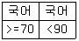
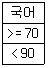
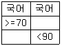
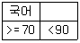
(정답률: 67%)
23. 다음 중 다양한 상황과 변수에 따른 여러 가지 결과 값의 변화를 가상의 상황을 통해 예측하여 분석할 수 있는 도구는?
- 시나리오 관리자
- 목표값 찾기
- 해찾기
- 데이터 표
(정답률: 73%)
24. 다음 중 정렬에 대한 설명으로 옳지 않은 것은?
- 머리글의 값이 정렬 작업에 포함 또는 제외되도록 설정하거나 해제할 수 있다.
- 숨겨진 열이나 행도 정렬시 이동되므로 데이터를 정렬하기 전에 숨겨진 열과 행을 표시하는 것이 좋다.
- 사용자 지정 목록을 사용하여 사용자가 정의한 순서 대로 정렬할 수 있다.
- 셀 범위나 표 열의 서식을 직접 또는 조건부 서식으로 설정한 경우 셀 색 또는 글꼴 색을 기준으로 정렬할 수 있다.
(정답률: 66%)
25. 다음 중 데이터가 입력된 셀에서 <Delete> 키를 눌렀을 때의 상황에 대한 설명으로 옳지 않은 것은?
- 셀에 설정된 메모는 지워지지 않는다.
- 셀에 설정된 내용과 서식이 함께 지워진다.
- [홈]-[편집]-[지우기]-[내용 지우기]를 실행한 것과 동일한 결과가 발생한다.
- 바로 가기 메뉴에서 <내용 지우기>를 실행한 것과 동일한 결과가 발생한다.
(정답률: 55%)
26. 아래 워크시트는 채우기를 이용하여 데이터를 입력한 결과이다. 다음 중 연속 데이터 대화상자에서 방향은 '열', 유형은 '급수'일 때 단계 값으로 옳은 것은?
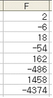
- 2
- -3
- 3
- -6
(정답률: 73%)
27. 다음 중 원 단위로 입력된 숫자를 백만원 단위로 표시하기 위한 사용자 지정 표시 형식으로 옳은 것은?
- #,###
- #,###,
- #,###,,
- #,###,,,
(정답률: 57%)
28. 다음 중 찾기에 관한 설명으로 옳지 않은 것은?
- 대/소문자를 구분하여 찾을 수 있다.
- 수식이나 값을 찾을 수 있지만, 메모 안의 텍스트는 찾을 수 없다.
- 위쪽 방향이나 왼쪽 방향으로 검색 방향을 바꾸려면 <Shift> 키를 누른 채 [다음 찾기]를 클릭한다.
- 와일드카드 문자인 ‘*’는 모든 문자를 대신할 수 있고, ‘?’는 해당 위치의 한 문자를 대신할 수 있다.
(정답률: 67%)
29. 다음 중 아래 워크시트에서 가입일이 2000년 이전이면 회원등급을 '골드회원', 아니면 '일반회원'으로 표시 하려고 할 때 [C19] 셀에 입력할 수식으로 옳은 것은?
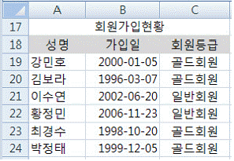
- =TODAY(IF(B19<=2000,“골드회원”,“일반회원”)
- =IF(TODAY(B19)<=2000,“일반회원”,“골드회원”)
- =IF(DATE(B19)<=2000,“골드회원”,“일반회원”)
- =IF(YEAR(B19)<=2000,“골드회원”,“일반회원”)
(정답률: 64%)
30. 다음 중 아래의 [매크로 기록] 대화상자의 각 항목에 입력하는 내용으로 옳지 않는 것은?
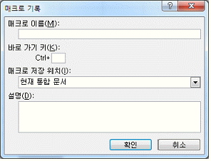
- 매크로 이름을 ‘매크로 연습’으로 입력하였다.
- 바로 가기 키 값을 ‘m’으로 입력하였다.
- 매크로 저장 위치를 ‘새 통합 문서’로 지정 할수 있다.
- 설명에 매크로 기록자의 이름, 기록한 날짜, 간단한 설명 등을 기록하였다.
(정답률: 51%)
31. 다음 중 수식의 실행 결과가 다르게 나타나는 것은?
- =POWER(2, 5)
- =SUM(3, 11, 25, 0, 1, -8)
- =MAX(32, -4, 0, 12, 42)
- =INT(32.2)
(정답률: 63%)
32. 다음 중 [A1:C4] 영역에 대한 수식의 실행 결과가 다르게 나타나는 것은?
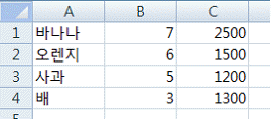
- =COUNTIF(B1:B4,"<>"&B3)
- =COUNTIF(B1:B4,">3")
- =INDEX(A1:C4,4,2)
- =TRUNC(SQRT(B1))
(정답률: 42%)
33. 아래 워크시트에서 [B2:D6] 영역을 참조하여 [C8] 셀에 표시된 바코드에 대한 단가를 [C9] 셀에 표시하였다. 다음 중 [C9] 셀의 수식으로 옳은 것은?
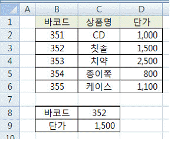
- =VLOOKUP(C8,$B$2:$D$6,3,0)
- =HLOOKUP(C8,$B$2:$D$6,3,0)
- =VLOOKUP($B$1:$D$6,C8,3,1)
- =HLOOKUP($B$1:$D$6,C8,3,1)
(정답률: 45%)
34. 다음 중 각 워크시트에서 채우기 핸들을 [A3]로 끌었을 때 [A3] 셀에 입력되는 값으로 옳지 않은 것은?
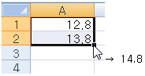
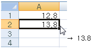
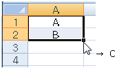
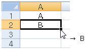
(정답률: 68%)
35. 다음 중 [셀 서식] 대화상자에서 ‘표시형식’의 각 범주에 대한 설명으로 옳지 않은 것은?
- ‘일반’ 서식은 각 자료형에 대한 특정 서식을 지정하는데 사용된다.
- ‘숫자’ 서식은 일반적인 숫자를 나타나는데 사용된다.
- ‘회계’ 서식은 통화 기호와 소수점에 맞추어 열을 정렬하는데 사용된다.
- ‘기타’ 서식은 우편번호, 전화번호, 주민등록번호 등의 형식을 설정하는데 사용된다.
(정답률: 45%)
36. 다음 중 추세선을 사용할 수 있는 차트 종류는?
- 3차원 묶은 세로 막대형 차트
- 분산형 차트
- 방사형 차트
- 표면형 차트
(정답률: 52%)
37. 다음 중 아래의 피벗 테이블과 이를 활용한 데이터 추출에 대한 설명으로 옳지 않은 것은?
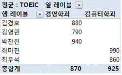
- 피벗 테이블 옵션에서 열 총합계 표시가 해제되었다.
- 총 합계는 TOEIC 점수에 대한 평균이 계산되었다.
- 행 레이블 영역, 열 레이블 영역, 그리고 값 영역에 각각 하나의 필드가 표시되었다.
- 행 레이블 필터를 이용하면 성이 김씨인 사람에 대한 자료만 추출할 수도 있다.
(정답률: 47%)
38. 다음 중 차트에서 계열의 순서를 변경할 때 선택해야 할 바로가기 메뉴는?
- 차트 이동
- 데이터 선택
- 차트 영역 서식
- 그림 영역 서식
(정답률: 59%)
39. 다음 중 창 나누기 기능에 대한 설명으로 옳지 않은 것은?
- 화면에 표시되는 창 나누기 형태는 인쇄 시에는 적용되지 않는다.
- 셀 포인터의 위치에 따라 수직, 수평, 수직.수평 분할이 가능하다.
- 창 나누기를 수행하여 나누기 한 각각의 구역의 확대/축소 비율을 다르게 설정할 수 있다.
- 나누기를 취소하려면 창을 나누고 있는 분할줄을 아무 곳이나 두 번 클릭한다.
(정답률: 43%)
40. 다음 중 [페이지 설정] 대화상자에 대한 설명으로 옳지 않은 것은?
- ‘셀 오류 표시’ 옵션을 이용하여 오류 값이 인쇄 되지 않도록 할 수 있다.
- 인쇄할 내용이 페이지의 가로/세로의 가운데에 위치하도록 설정할 수 있다.
- ‘시작 페이지 번호’ 옵션을 이용하여 인쇄할 페이지의 시작 페이지 번호를 지정할 수 있다.
- 설치된 여러 대의 프린터 중에서 인쇄할 프린터를 선택할 수 있다.
(정답률: 42%)
VOD는 비디오를 디지털로 압축하여 비디오 서버에 저장하고, 가입자가 원하는 콘텐츠를 제공하며 재생, 제어, 검색, 질의 등이 가능한 영상 서비스이다. 사용자의 요구에 따라 영화나 뉴스 등의 콘텐츠를 통신 케이블을 통하여 서비스한다. VCR 같은 기능의 셋탑 박스는 비디오 서버로부터 압축되어 전송된 디지털 영상과 소리를 복원, 재생하는 역할을 한다.